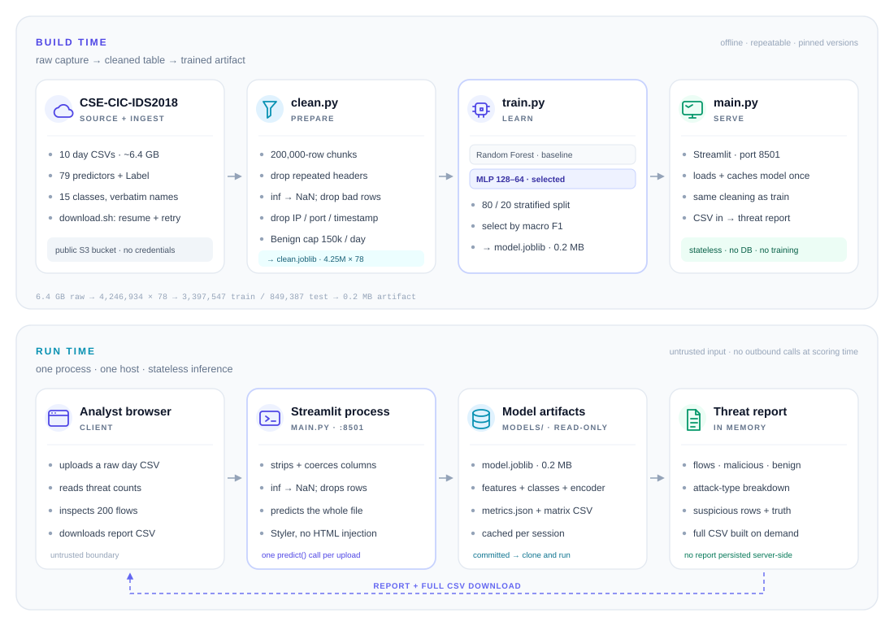
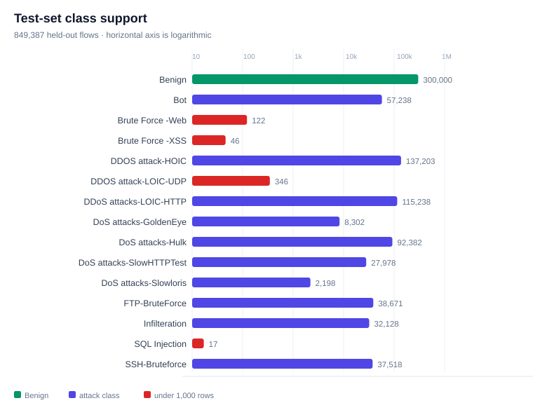
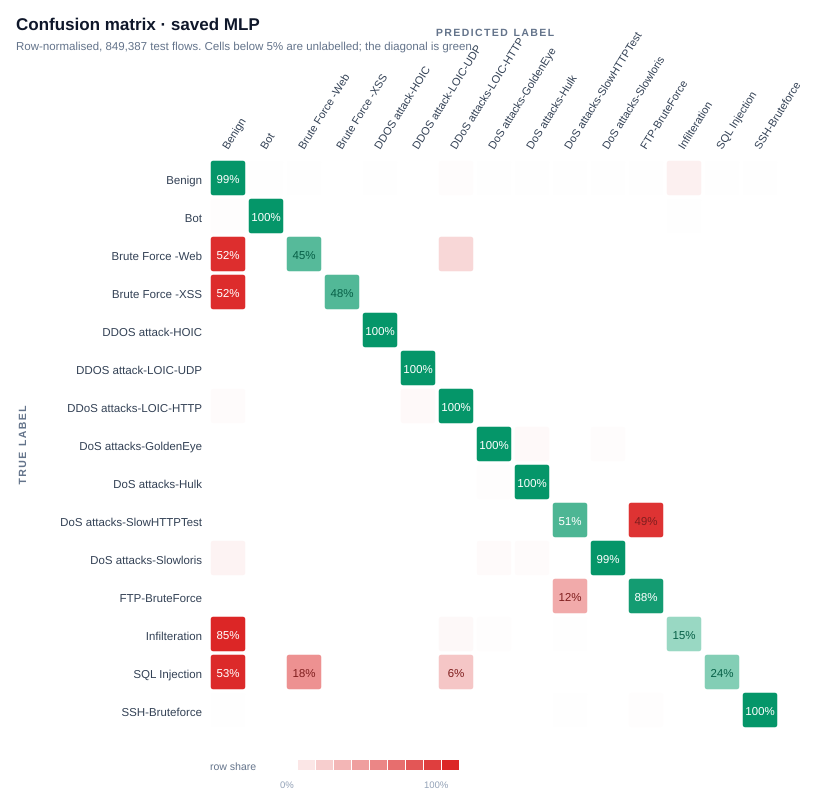
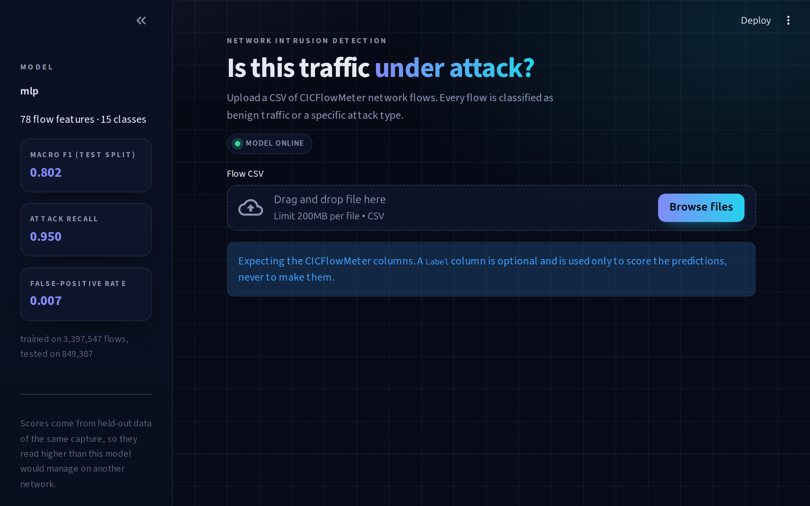
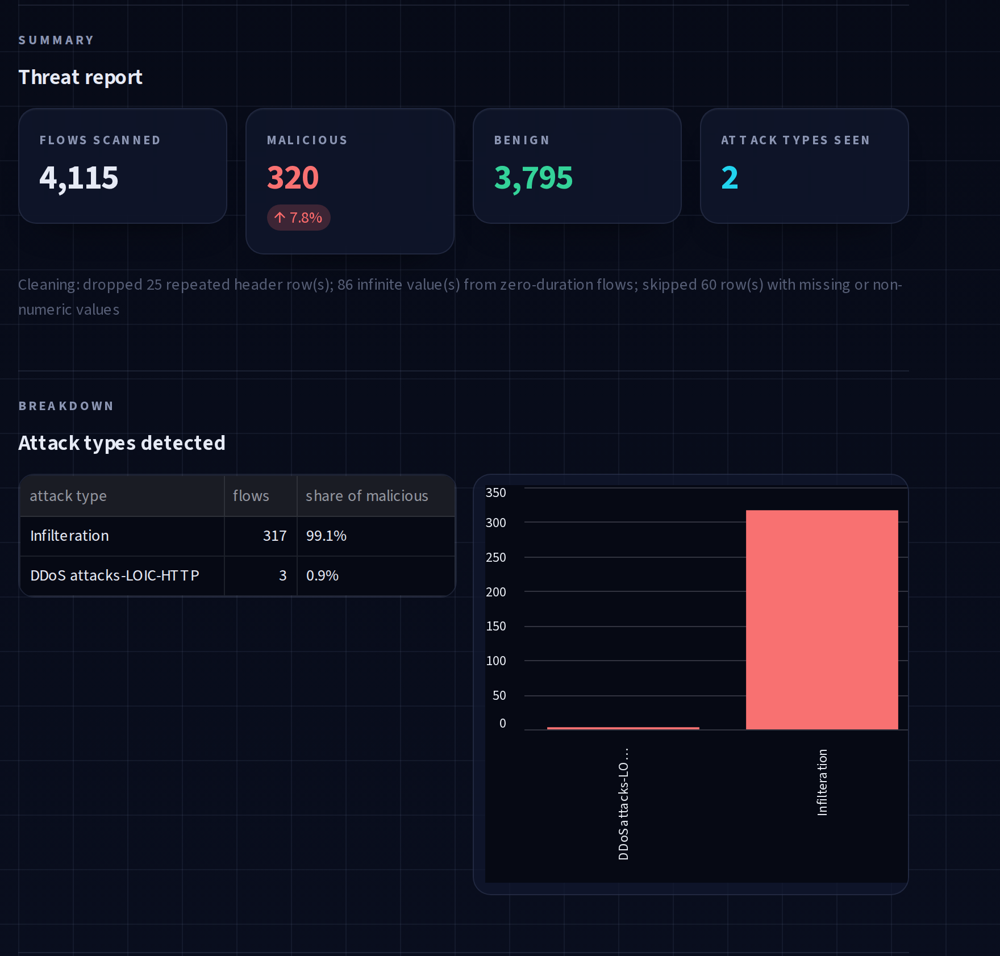
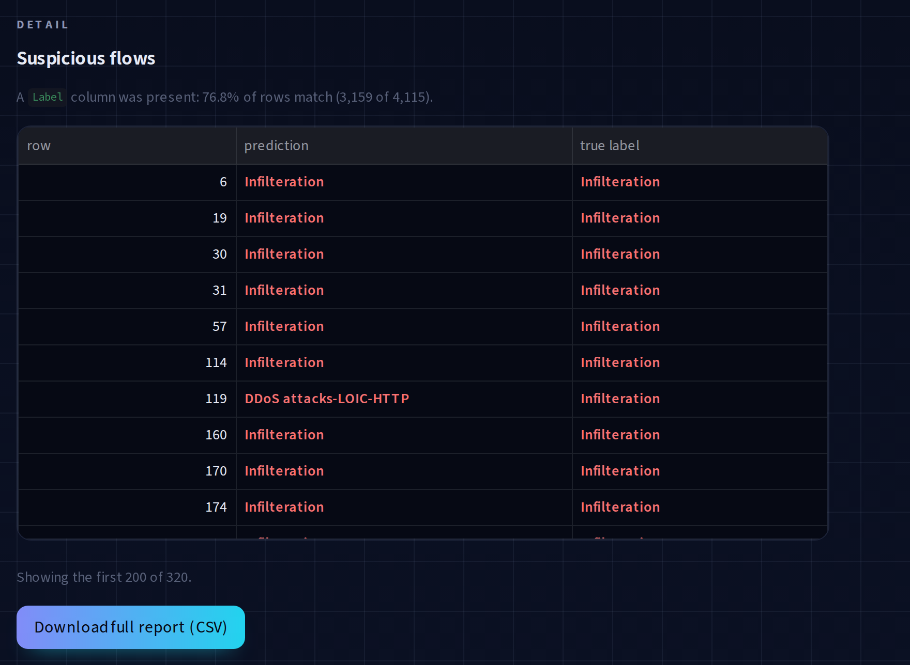

This dossier explains what the repository contains, how its pieces connect, and where the measured numbers come from. It is written for a teammate who must run, review or extend the project — not as a pitch.
Every metric in this document is copied from the committed metrics.json and confusion_matrix.csv, or recomputed directly from the latter. The UI figures are real captures, not mockups: a 4,200-row sample of Thursday-01-03-2018 was uploaded to the running dashboard.
A small, complete machine-learning loop: ten public capture days in, one 0.2 MB classifier out, and a browser that turns a CSV of flows into a per-class threat report.
The project classifies CICFlowMeter network flows from CSE-CIC-IDS2018 into 15 classes — Benign plus 14 attack types. It is deliberately a single-process system: one offline build path, one model artifact, one Streamlit app. There is no database, queue, model server or inbound API to operate.
Attacks are about 1% of real traffic, and the rarest class in the full dataset, SQL Injection, has 87 rows across all ten days. A model that answers Benign every time would exceed 99% accuracy and be useless. Macro F1 averages the 15 per-class F1 scores with equal weight, so a collapsed rare class cannot hide behind a large benign class. Accuracy and weighted F1 were rejected for the same reason.
DDOS attack-HOIC, DDoS attacks-LOIC-HTTP and the misspelled Infilteration are treated as data. “Fixing” them invents classes the CSVs do not contain and breaks every mapping downstream.Flow ID, Src IP, Src Port, Dst IP and Timestamp are removed when present. In a staged capture those fields separate the classes almost perfectly; keeping them would memorize the lab setup rather than attack behaviour.Benign rows is kept per day (--cap 150000 in the final run). Every attack row that survives numeric validation is retained, and the cap is recorded in metrics.json.git clone followed by streamlit run main.py works immediately. The 6.4 GB capture is reproducible from src/download.sh and is not versioned.The headline scores come from a random held-out split of the same capture, after benign traffic was capped. They are good evidence that the pipeline works; they are not a claim about performance on an arbitrary production network.
Section 02 is the map. Section 03 maps the repository onto that system. Sections 04–06 follow the build path from raw CSV to serialized bundle, Sections 07–08 examine the evidence, and Sections 09–12 cover the runtime, deployment and the limits a reviewer should press on. Appendix A contains the artifact contracts; all source paths are relative to the repository root.
Build time turns public captures into a committed model. Run time turns a file into a verdict. The only thing crossing the boundary is the model bundle.
The system is easiest to reason about as two separate graphs. They share exactly one node: models/model.joblib. Nothing in the serving path fits models, reads the dataset, or calls a remote service.
src/download.sh fetches ten named CSE-CIC-IDS2018 day CSVs over HTTPS into data/. It resumes partial files with curl -C - and starts with the 103 MB day so the pipeline can be exercised before the ~4 GB day lands.src/clean.py reads each day in 200,000-row chunks, drops repeated headers and identifier/time columns, converts infinities to missing values, drops unusable rows, caps benign traffic, and writes models/clean.joblib.src/train.py loads the cleaned table, makes a stratified 80/20 split, fits a Random Forest baseline and an MLP, compares them on macro F1, and writes the better model plus metrics.json and confusion_matrix.csv.main.py applies the same header, identifier, infinity and missing-value rules used during training. A Label column is optional and is used only to score predictions, never as a feature.model.predict(X) call scores the whole file; the label encoder maps integer outputs back to class names.Build time is the upper panel: source and ingest → prepare → learn → serve artifact. Run time is the lower panel: browser → Streamlit process → read-only model files → report. Solid arrows carry data; the dashed arrow carries the downloaded report back to the analyst. The vertical separation is also a trust and dependency boundary: the serving host never needs the 6.4 GB dataset or a training environment.
The next page shows the full topology at print scale. The key operational property is that the serving path is stateless and self-contained: restarting the app loses nothing, and a clone can serve immediately because the model is committed.

main.py, models/model.joblib and models/metrics.json. There is no database, message queue, model server or outbound call at inference time; the uploaded CSV is the only input and the downloaded CSV is the only output.Four code files, three committed artifacts, and one ignored dataset. The dependency direction is acyclic and visible in the imports.
The repository is organised around three boundaries: code (how to build and serve), data (large, reproducible, never committed), and artifacts (small, measured, committed). Keeping those separate is what makes a 6.4 GB project cloneable in seconds.
| Path | Responsibility | Committed | Size |
|---|---|---|---|
src/download.sh | Names the ten days, preserves the S3 key typo Thuesday, resumes partial downloads, writes only into data/. | yes | 2.9 KB |
src/clean.py | Owns every cleaning rule and the benign cap. Reads chunked, never loads a 4 GB day whole; writes one combined table plus per-day label counts. | yes | 5.5 KB |
src/train.py | Owns the split, both estimators, model comparison and all three output artifacts. The saved bundle contains no custom classes. | yes | 8.8 KB |
main.py | Owns the serving contract: same cleaning rules, feature-order check, label decoding, report rendering and CSV export. | yes | 14 KB |
models/model.joblib | The only cross-boundary artifact. Contains model, features, classes, name and encoder. | yes | 0.2 MB |
models/clean.joblib | Large intermediate table, regenerated by clean.py; intentionally not versioned. | no | — |
data/*.csv | Raw capture days; reproducible from the public bucket. | no | ~6.4 GB |
download.sh → data/ → clean.py → models/clean.joblib → train.py → models/model.joblib → main.py. There are no back-edges: the dashboard never imports training code, the training script never imports the dashboard, and no module reads the raw CSVs at serve time. That is deliberate — it keeps the runtime image small and makes it impossible for a dashboard request to trigger training. There is no HTTP API, database, queue, authentication layer, CI pipeline or automated test suite in the repository; those are gaps, not hidden modules, and Section 12 treats them as such.
The CSVs are not clean and the labels are not tidy. The pipeline handles both explicitly, and every rule is measured rather than assumed.
CSE-CIC-IDS2018 provides per-day CICFlowMeter exports. Each row is one flow; the Label column is the target. The processed files used here have 80 columns: Dst Port, Protocol, Timestamp, 76 traffic-statistic columns and Label. No source or destination IP, port or flow-ID columns are present in these particular exports — the cleaner still removes them defensively when another export includes them.
| Day file (prefix) | Attack coverage staged that day | Size |
|---|---|---|
Thursday-01-03-2018 | Infilteration | 103 MB |
Wednesday-14-02-2018 | DoS GoldenEye, DoS Slowloris | — |
Thursday-15-02-2018 | DoS Hulk, DoS SlowHTTPTest | — |
Friday-16-02-2018 | DoS Hulk | — |
Thursday-22-02-2018 | Brute Force Web/XSS, SQL Injection | — |
Friday-23-02-2018 | Brute Force Web/XSS, SQL Injection | — |
Wednesday-21-02-2018 | DDOS attack-LOIC-UDP, DDOS attack-HOIC | — |
Thuesday-20-02-2018 | DDoS attacks-LOIC-HTTP · key is misspelled in the bucket | ~4 GB |
Friday-02-03-2018 | Bot | — |
Wednesday-28-02-2018 | Infilteration | — |
Sizes are only recorded in the repository for the smallest day and the ~4 GB day. The ten-day total quoted in the README is ~6.4 GB.
| # | Gate | Rule | Measured on Thursday-01-03 |
|---|---|---|---|
| 1 | Header whitespace | Strip every column name before matching. | — |
| 2 | Repeated headers | Drop rows whose Label literally reads Label; drop by value, not line number. | 25 rows |
| 3 | Leaky identifiers | Drop Flow ID, Src IP, Src Port, Dst IP, Timestamp when present (errors="ignore"). | only Timestamp present; 78 features remain |
| 4 | Numeric coercion | pd.to_numeric(errors="coerce"); non-numeric cells become missing. | — |
| 5 | Infinite rates | Replace ±inf with NaN, then drop any row with a missing feature. A zero-duration flow has no meaningful rate. | 4,004 inf cells → 2,919 rows dropped |
| 6 | Benign cap | Randomly keep at most --cap benign rows per day (seed 42); never filter attack rows. | final run: 150,000/day |
| 7 | Persist | Concatenate days, write table + per-day label counts + cap to clean.joblib. | 4,246,934 × 78 + label, 15 classes |
The 25-header and 4,004-inf figures come from the smallest day, the only day for which the README publishes defect counts. The cleaner prints the same counters for every day when it runs, but those per-day numbers are not committed. Do not read the Thursday figures as ten-day totals.
The source labels include inconsistent capitalisation and a misspelling: DDOS attack-HOIC is all-caps, DDoS attacks-LOIC-HTTP is not, and Infilteration is spelled with an extra syllable. Correcting any of them would create a string that never appears in the CSVs, so the cleaner and trainer treat labels as opaque values. The model bundle carries those exact strings to the dashboard.
Each day stages only Benign plus the attacks run that day. Training on a single day means the model never sees most classes: the project’s demo notes record macro F1 0.665 for that early single-day attempt, rising to 0.802 across ten days. The dataset rows also carry the staging date, which is why Timestamp is removed rather than used as a feature.
# src/clean.py — the rules that change the table chunk.columns = [c.strip() for c in chunk.columns] bad_header = chunk[LABEL].astype(str).str.strip() == LABEL chunk = chunk[~bad_header] chunk = chunk.drop( columns=[c for c in DROP_COLS if c in chunk.columns], errors="ignore", ) X = chunk.drop(columns=[LABEL]).apply(pd.to_numeric, errors="coerce") X = X.replace([np.inf, -np.inf], np.nan) keep = X.notna().all(axis=1) X, y = X[keep], y[keep] # the benign cap is applied after the whole day is read
The test rows are real held-out flows, but they are drawn from a deliberately rebalanced table. That distinction controls how every metric should be read.
The cleaner caps Benign at 150,000 rows per day. With ten days that is 1,500,000 benign rows; the remaining 2,746,934 rows are attacks. The cleaned table is therefore 64.7% attack, not the roughly 1% attack prevalence of the raw capture.

Benign; SQL Injection has 17 test rows, Brute Force -XSS 46, Brute Force -Web 122.| Property | Value |
|---|---|
| Cleaned table | 4,246,934 rows · 78 features · 15 classes |
| Split | 80 / 20, stratified by class, random_state=42 |
| Train | 3,397,547 rows |
| Test | 849,387 rows |
| Rare-class guard | Classes with fewer than 10 rows are dropped with a printed warning; all 15 classes survived this run. |
| No synthetic oversampling | No SMOTE or other generation. The forest uses class_weight="balanced"; both models use the benign cap. |
The reported FPR (0.00689) is measured against 300,000 benign flows from the capped test set, and PR-AUC is computed on a set where 64.7% of rows are attacks. Both are useful for comparing models under the same conditions; neither is a production estimate at 1% attack prevalence. Section 12 gives the arithmetic for the gap.
The largest days are dominated by benign traffic, and loading all of it would make the table unnecessarily large for a laptop-scale project. Capping benign rows is a memory decision, not a claim that benign traffic is less important. Every attack row that survives numeric validation is kept, and the cap value is written into metrics.json so the experiment is auditable.
The cost is a prior shift. A randomly held-out 20% of this table preserves the rebalanced 64.7% attack share, so the test set is not representative of raw traffic. The model still learns useful attack signatures — and the per-class recalls in Section 07 remain meaningful — but the false-positive and precision figures must be re-evaluated on a prevalence-matched sample before deployment.
train_test_split is random, not temporal or capture-based. Near-duplicate flows from the same connection can land on both sides of the split, which makes the scores optimistic compared with a time-based split. This was a deliberate scope choice for the course project, not an oversight; Section 12 lists the stronger evaluation as the first follow-up.
A two-layer perceptron on standardized flow features, selected over a balanced forest because it produces 33× fewer false alarms.
Training compares two deliberately different baselines: an unnormalized Random Forest and a scaled MLP. Both are ordinary scikit-learn estimators. The MLP is wrapped in a pipeline with StandardScaler, and the label encoder is stored beside the model instead of inside a custom class.
The saved pipeline stops after 14 of 60 maximum iterations; fit time was 69.8 s. The forest fit took 74.5 s on the same machine.
| Property | Random Forest (baseline) | MLP (selected) |
|---|---|---|
| Estimator | RandomForestClassifier, 100 trees | MLPClassifier(hidden_layer_sizes=(128, 64)) |
| Input scaling | none (tree splits are scale-invariant) | StandardScaler in a pipeline |
| Class handling | class_weight="balanced" | benign cap only; labels integer-encoded |
| Regularization | min_samples_leaf=20 | early stopping, n_iter_no_change=5 |
| Fit budget | 100 trees, all cores | max_iter=60; stopped at 14 |
| Fit time | 74.5 s | 69.8 s |
| Saved size | 2,784,420 nodes · not saved | 217,944 B · saved |
| Test macro F1 | 0.7483 | 0.8019 |
Two implementation details are load-bearing. First, scikit-learn 1.6’s MLPClassifier with early stopping crashes on string labels, so train.py encodes them to integers and keeps the encoder. Second, the forest’s min_samples_leaf=20 is not cosmetic: it cuts the forest to 2.78 million nodes and makes the artifact practical, but the forest is still not the saved model.
The artifact is a plain dictionary. Keeping it free of project-defined classes is what lets main.py load it in a fresh process after a clone.
# models/model.joblib — keys and meaning { "model": Pipeline(StandardScaler → MLPClassifier(128, 64)), "features": [78 column names, in training order], "classes": [15 label strings, verbatim from the CSVs], "model_name": "mlp", "label_encoder": LabelEncoder(15 classes) }
An earlier version wrapped the model in a class defined in train.py. Pickle records the class by module path, so a saved model loaded from main.py raised AttributeError and the first-run dashboard died. The fix is not a try/except: ship only standard sklearn objects, and decode labels in the consumer. Loadability is part of the model contract.
The selection rule in train.py is “highest macro F1”, and the MLP wins that comparison by 5.4 points. But the deployment argument is stronger than the ranking: the forest catches 3.6 more points of attacks while raising false alarms on 22.6% of benign flows, versus 0.69% for the MLP. An analyst facing 67,700 false alerts per 300,000 benign flows stops reading alerts; the MLP’s recall is still 95.0%. Section 07 lays out both sides without hiding the trade.
df[features]; a missing column raises a readable error naming the count and examples.main.py applies the same header, identifier, infinity and missing-value rules; it does not import clean.py because that module also owns file I/O and the benign cap, which must not run at serve time.A strong headline hides a bimodal per-class story: seven classes above 0.99 F1, two rare classes near 0.25–0.36, and one misspelled class that accounts for most of the error.
Both models were evaluated on the same 849,387-row stratified test split. Macro F1 0.8019, attack recall 0.9502 and false-positive rate 0.00689 are the three numbers that describe the shipped MLP. The forest is a useful counterfactual, not a failed run.
| Metric | Random Forest | MLP (saved) | Reading |
|---|---|---|---|
| Macro F1 | 0.7483 | 0.8019 | +5.4 points for the MLP |
| Attack recall | 0.9863 | 0.9502 | forest catches 3.6 points more attacks |
| False-positive rate | 0.22581 | 0.00689 | 22.6% vs 0.69% of benign flows |
| PR-AUC (attack vs benign) | 0.99615 | 0.99497 | effectively tied; both rank well |
| Fit time | 74.5 s | 69.8 s | same machine, same split |
| Model size | 2.78M nodes | 0.2 MB | only the MLP is serialized |
| Class (verbatim) | Test rows | MLP recall | MLP F1 | RF F1 |
|---|---|---|---|---|
| Benign | 300,000 | 0.993 | 0.953 | 0.861 |
| Bot | 57,238 | 1.000 | 1.000 | 0.998 |
| Brute Force -Web | 122 | 0.451 | 0.588 | 0.216 |
| Brute Force -XSS | 46 | 0.478 | 0.647 | 0.537 |
| DDOS attack-HOIC | 137,203 | 1.000 | 1.000 | 1.000 |
| DDOS attack-LOIC-UDP | 346 | 1.000 | 0.839 | 0.837 |
| DDoS attacks-LOIC-HTTP | 115,238 | 0.998 | 0.999 | 0.999 |
| DoS attacks-GoldenEye | 8,302 | 0.999 | 0.998 | 0.999 |
| DoS attacks-Hulk | 92,382 | 1.000 | 1.000 | 1.000 |
| DoS attacks-SlowHTTPTest | 27,978 | 0.506 | 0.607 | 0.701 |
| DoS attacks-Slowloris | 2,198 | 0.995 | 0.994 | 0.998 |
| FTP-BruteForce | 38,671 | 0.885 | 0.789 | 0.593 |
| Infilteration | 32,128 | 0.153 | 0.252 | 0.398 |
| SQL Injection | 17 | 0.235 | 0.364 | 0.089 |
| SSH-Bruteforce | 37,518 | 1.000 | 1.000 | 1.000 |
The forest buys 3.6 points of attack recall for 22 points of false-positive rate. On 300,000 benign flows that is roughly 67,700 false alerts instead of 2,067. The project chooses the MLP because alert fatigue is a failure mode too — and states the cost: 5% of attacks are missed.
| True label | Predicted as | Flows | Share of true class | Reading |
|---|---|---|---|---|
| Infilteration | Benign | 27,166 | 84.6% | the dominant failure |
| SQL Injection | Benign | 9 | 52.9% | 17 test rows; low confidence |
| Brute Force -XSS | Benign | 24 | 52.2% | 46 test rows |
| Brute Force -Web | Benign | 63 | 51.6% | 122 test rows |
| DoS attacks-SlowHTTPTest | FTP-BruteForce | 13,829 | 49.4% | low-and-slow flows overlap |
| FTP-BruteForce | DoS attacks-SlowHTTPTest | 4,459 | 11.5% | the reverse confusion |
| DDOS attack-LOIC-UDP | DDoS attacks-LOIC-HTTP | 133 | 38.4% | 346 test rows |
| Benign | Infilteration | 1,909 | 0.6% | largest benign false alarm |
Infilteration is not a coding bug. 84.6% of its flows look benign under these 78 statistics; the class is also misspelled in the source. The model recovers only 15.3% of it, and this single class contributes 1,909 false positives to the benign FPR. Treat any Infilteration detection as a lead, not a verdict.
SlowHTTPTest and FTP-BruteForce are a confusion pair. Nearly half of the SlowHTTPTest rows become FTP-BruteForce, and 11.5% go the other way. Both are long, low-rate flows; flow-level aggregates do not separate them cleanly. The forest is better on SlowHTTPTest (F1 0.701) but worse on FTP (0.593), which is why neither model is uniformly better per class.
Rare-class scores are unstable by construction. SQL Injection has 17 test rows; a single row moves recall by 5.9 points. The 0.364 F1 is a description of this split, not a stable estimate of SQL detection. Collecting more examples is more valuable than tuning on 17 rows.
Seven classes have F1 ≥ 0.99: Bot, DDOS attack-HOIC, DDoS attacks-LOIC-HTTP, GoldenEye, Hulk, Slowloris and SSH-Bruteforce. (LOIC-UDP reaches 0.839, not 0.99, despite 100% recall — its false positives are the LOIC-HTTP flows shown in the matrix.) On the flows it was trained to recognize, the MLP is reliable; the system’s operational value is concentrated there.
The full 15 × 15 test matrix, row-normalised. One row explains most of the miss rate; two more explain the rest.
Each row is a true class and each column a prediction. Green is the diagonal, red is error, and the intensity is the row share. The matrix is the evidence behind the per-class table in Section 07.

Infilteration row sends 85% of its 32,128 flows to Benign. The SlowHTTPTest and FTP-BruteForce rows form the second visible off-diagonal block. Sparse red cells in the rare rows are single flows and should not be over-read.One upload, one prediction pass, one report. The interface is a thin operator surface over the bundle — it never trains and never writes the report to disk.
streamlit run main.py starts a single process on port 8501. The sidebar shows the model actually loaded and the three headline metrics, so an operator can see which artifact is answering. The main panel begins with a drop zone and nothing else.

@st.cache_resource); the pill reads Model online only because the artifact exists and parsed. No dataset is required to reach this screen.mlp), 78 features, 15 classes, macro F1 0.802, attack recall 0.950 and FPR 0.007 — read from metrics.json, not hard-coded.Label column is optional; if present it is used only to score the predictions.threat_report.csv.A 4,200-row sample of Thursday-01-03-2018 was uploaded, including 25 repeated header rows and 60 rows with infinite or non-numeric values. The dashboard dropped those and scored 4,115 usable flows; 320 were flagged malicious (7.8%), 3,795 benign, with two predicted attack types. The Label column was present, and 76.8% of rows matched the truth label.
The screenshot below starts at the summary and keeps the main column only. The cleaning line is generated from the file’s actual defects, not from a template: 25 repeated header rows, 86 infinite values and 60 skipped rows. This is the same logic as clean.py, applied at serve time.

Infilteration, a class the model only recovers 15.3% of on the full test set. Three flows were predicted DDoS attacks-LOIC-HTTP; their true label was Infilteration — visible false positives, not hidden.
src/.Styler map and st.dataframe, not through unsafe_allow_html. The team’s test with <script>alert(1)</script> in the label column rendered it as text.The uploaded file is untrusted data, the local model is untrusted code, and the report is generated without persistent state.
Serving is short enough to read end to end. The app loads the bundle once per process, validates the upload, applies the training-time cleaning rules, predicts once, and renders. Every failure has an explicit message and a st.stop(); there is no fallback model and no partial report.
load_model() reads models/model.joblib if it exists and caches it with @st.cache_resource. load_metrics() caches metrics.json separately with @st.cache_data.pd.read_csv(upload, low_memory=False, dtype=str) loads the file as strings. A parse error is caught and displayed.Label; the optional truth column is separated.ValueError naming the count and the first four examples.model.predict(X) call; the label encoder inverse-transforms the integers when present.| Condition | Behaviour |
|---|---|
| No model artifact | Error panel instructing the operator to run python src/train.py; no uploader; pill offline. |
| No file uploaded | Info panel describing the expected CICFlowMeter columns; nothing is scored. |
| CSV unreadable | Error includes the parser exception; no partial frame is used. |
| Missing feature columns | ValueError listing the missing count and first four names; no prediction. |
| All rows dropped | “No usable rows in that CSV”; no empty report. |
| No attacks predicted | Success panel instead of an empty table; the full CSV is still downloadable. |
| More than 200 suspicious flows | Caption states that only the first 200 are shown; the download contains all rows. |
The uploaded CSV is treated as hostile data. It is parsed by pandas as strings, coerced numerically, and never passed to eval, exec, a shell, or an HTML template that would render it. Predictions and labels are displayed through st.dataframe with a pandas Styler; the verdict colour map is fixed CSS keyed by exact string comparison. There is no SQL layer to inject into, no file path derived from user input, and no report written to disk.
Two risks remain and should be stated rather than buried. First, the model file is executable content: Python unpickles it, so anyone who can replace model.joblib can run code in the dashboard process. Protect the artifact with repository permissions and do not accept model files from uploads. Second, the demo has no authentication or TLS; it is intended for localhost or a trusted internal demo, not a public endpoint. Exposing it requires an authenticating proxy at minimum.
Streamlit accepts files up to 200 MB by default, and the app loads the whole upload into memory before scoring. The MLP scores in a single vectorized call, so inference is fast relative to parsing; the practical limit is memory for the parsed frame, not model compute. The dashboard is not a streaming service and should not be used as one.
Clone, install pinned wheels, run. The model is in the repository; the data is one script away. The failure modes are packaging and expectations, not orchestration.
The fastest useful deployment is a local process. The committed 0.2 MB model means the dashboard is functional immediately after installation; reproducing the metrics requires the 6.4 GB download and a training run.
# from a clean clone git clone https://github.com/i994q/nids-ml-challenge && cd nids-ml-challenge python3 -m venv .venv .venv/bin/pip install -r requirements.txt # serve immediately — model.joblib is committed .venv/bin/streamlit run main.py # only if you need to reproduce the artifacts bash src/download.sh # ten days, ~6.4 GB, resumable .venv/bin/python src/clean.py --cap 150000 .venv/bin/python src/train.py # RF + MLP, writes models/*
| Target | What it needs | Constraint |
|---|---|---|
| Local laptop | Python + pinned wheels + committed model | Recommended for the course demo; no data required to serve. |
| Streamlit Community Cloud | Repository + main.py + requirements.txt | Model is under the size limit; no dataset upload needed. Add auth before exposing reports. |
| Container / VM | Same process, port 8501 | Terminate TLS and authenticate at a reverse proxy; restrict egress at scoring time. |
| Batch job | Run main.py logic headlessly | Not implemented; the dashboard is interactive, not a CLI batch tool. |
model.joblib (0.2 MB), metrics.json, confusion_matrix.csv, and the pinned requirements.data/ and models/clean.joblib. They are regenerated by scripts, not hand-edited.requirements.txt pins the versions the project was trained and tested with: pandas 2.3.3, numpy 2.0.2, scikit-learn 1.6.1, scipy 1.13.1, joblib 1.5.3, streamlit 1.50.0 and altair 5.5.0. The split seed is fixed at 42, the benign cap is recorded in metrics.json, and the class order comes from the bundle. Timings and the last digits of the metrics can still vary with CPU, BLAS build and library patch level; the committed numbers are from the run documented in this dossier.
Pins must match the machine that produced the metrics. An earlier requirements file asked for Streamlit 1.41.1 while the tested environment had 1.50.0 — a clone would have installed a version nobody measured. The pins were corrected to the observed versions.
Prefer wheels on small servers. On a 1 GB VM, pip built numpy from source for about 25 minutes and then failed because no wheel existed for the interpreter. Installing with --only-binary=:all: completed nine packages in about 50 seconds. Reproduction instructions should name the interpreter and use binary wheels for numerical dependencies.
No CI, no automated tests, no container build, no auth/TLS, no structured logging, no drift monitoring and no scheduled retraining. The repository is honest about being a course project: the next operational step is not “more Kubernetes”, it is a small test suite around the cleaning and bundle contracts, then authentication and a prevalence-matched evaluation before any real traffic.
The model is useful inside its evaluation conditions. Outside them, several assumptions break at once — and a reviewer should know which ones.
The headline result is real but narrow: a random held-out split of the same capture, after benign capping, scored with a closed set of 15 labels. Change the network, the prevalence, the attack mix or the split policy and the numbers move. This section names the gaps and the cheapest way to close each one.
| Limitation | Why it matters | Next step |
|---|---|---|
| Same-capture random split | Near-duplicate flows can appear on both sides; scores are optimistic versus a temporal split. | Split by day or capture window; report both numbers. |
| Capped prior | Test set is 64.7% attacks; production is nearer 1%. FPR and PR-AUC are not directly transferable. | Evaluate on a prevalence-matched sample; calibrate thresholds. |
| Closed-world labels | A novel attack is forced into one of 15 classes; there is no “unknown” output. | Add an open-set/other class or a distance-based rejection rule. |
| Infilteration recall 0.153 | 85% of this class is missed; it also drives 1,909 benign false positives. | Do not rely on flow statistics alone; add host/sequence telemetry. |
| Rare-class estimates | SQL (17 test rows), XSS (46), Web (122): one row moves recall by whole points. | Collect more examples; report confidence intervals. |
| Residual shortcut features | Dst Port and Protocol remain and may correlate with the staged service or attack. | Ablate them and test on shifted ports/services. |
| No auth, TLS or persistence | The dashboard is a local demo; exposing it would leak reports and allow abuse. | Authenticating reverse proxy, TLS, rate limits, retention policy. |
| No tests, CI or monitoring | Cleaning regressions and bundle drift are invisible until a demo fails. | Contract tests for cleaning, bundle load and report schema; CI on push. |
The FPR is measured on 300,000 benign flows. Suppose a deployment sees 10 million flows per day with 1% attacks: 100,000 attacks and 9.9 million benign flows. Applying the measured rates — 95.0% attack recall and 0.69% FPR — gives roughly 95,000 true positives and 68,300 false positives per day. Precision would be about 58%, not the 99%+ implied by PR-AUC on the capped test set.
0.69% sounds small until it is multiplied by real traffic. At 10M flows/day it is ~68k alerts. The model is a triage layer: it can rank and group suspicious flows, but it cannot autonomously block traffic at this false-positive rate. A production threshold must be chosen against analyst capacity and the cost of a miss, then measured on prevalence-matched data.
The build path is reproducible, the labels are handled honestly, the leaky columns are removed, the model bundle loads across processes, the dashboard applies the same cleaning rules as training, and the interface reports what it drops. Those are the parts a reviewer should trust; the performance claims are bounded by the evaluation conditions above.
The contracts a future maintainer must not break: feature order, label set, bundle keys and matrix orientation.
| Key | Type | Contract |
|---|---|---|
model | sklearn Pipeline | Accepts a float32 frame with the 78 features in features order; predicts integer class indices for the MLP. |
features | list[str] | Exactly 78 names, in training order. The dashboard selects these columns after cleaning. |
classes | list[str] | 15 verbatim labels, sorted by LabelEncoder; index i maps to the encoder’s integer i. |
model_name | str | "mlp" for the committed artifact; shown in the sidebar. |
label_encoder | LabelEncoder or None | The MLP requires inverse transformation; the forest path would be None. |
{
"best": "mlp",
"model_file_mb": 0.2,
"n_train": 3397547,
"n_test": 849387,
"benign_cap": 150000,
"results": {
"random_forest": { "macro_f1": 0.7483, "attack_recall": 0.9863,
"fpr": 0.22581, "pr_auc": 0.99615,
"fit_seconds": 74.5, "per_class_f1": { … },
"forest_nodes": 2784420 },
"mlp": { "macro_f1": 0.8019, "attack_recall": 0.9502,
"fpr": 0.00689, "pr_auc": 0.99497,
"fit_seconds": 69.8, "iterations_run": 14,
"per_class_f1": { … } }
}
}
The dashboard reads results[best]; changing the best model without regenerating the file will show the wrong sidebar metrics.
First row is a header with an empty corner cell followed by the 15 predicted labels; each following row is a true label followed by 15 integer counts. Rows and columns use the same sorted label order as classes. Row sums equal the test support in Figure 2 and sum to 849,387. The matrix is counts, not normalised scores; the landscape figure divides each row by its own sum.
The measurement vocabulary used in this document, in one place.
| Term | Meaning here |
|---|---|
| Flow | One CICFlowMeter record: a directional summarization of packets sharing source/destination/port/protocol within a timeout. |
| CICFlowMeter | The flow-feature extractor used to build CSE-CIC-IDS2018; produces the 78 numeric statistics used by the model plus a label. |
| Macro F1 | Unweighted mean of the 15 per-class F1 scores. Every class contributes equally, so rare-class failures are visible. |
| Attack recall | Binary recall with “attack” = any non-Benign label. It answers “of all attack flows, how many were flagged at all?”, not “was the type correct?”. |
| False-positive rate (FPR) | Fraction of true benign flows predicted as any attack. Denominator: 300,000 benign test flows in this run. |
| PR-AUC | Area under the precision–recall curve for attack-vs-benign, using 1 − P(Benign) as the score. Threshold-free ranking quality; prevalence-sensitive. |
| Stratified split | Train/test partition that preserves each class’s proportion. It does not prevent near-duplicate leakage across the split. |
| Benign cap | Maximum number of Benign rows kept per day before concatenation; attacks are not capped. |
| Bundle | The model.joblib dictionary: fitted pipeline, feature names, class names, model name and label encoder. |
Primary sources for the dataset and the exact code path used to produce this dossier.
I. Sharafaldin, A. Habibi Lashkari and A. A. Ghorbani, “Toward generating a new intrusion detection dataset and intrusion traffic characterization,” ICISSP, pp. 108–116, 2018.
Canadian Institute for Cybersecurity, CSE-CIC-IDS2018 dataset page:
https://www.unb.ca/cic/datasets/ids-2018.html
Processed traffic files are fetched from the public bucket path
https://cse-cic-ids2018.s3.amazonaws.com/Processed%20Traffic%20Data%20for%20ML%20Algorithms/
using the ten keys in src/download.sh. The bucket is public; no credentials are required.
| Resource | Purpose |
|---|---|
README.md | Short project overview, team split, data notes and honest limits. |
docs/VIDEO_SCRIPT.md | Ten-minute demo script with timings, speaking roles and the measured numbers. |
models/metrics.json | Machine-readable metrics for both models; source for Sections 06–07. |
models/confusion_matrix.csv | 15 × 15 test counts; source for Figures 2 and 3 and the per-class table. |
docs/documentation/ | This PDF, its vector diagrams, screenshots, HTML/CSS source and build.py. |
Python 3 + pandas, NumPy, scikit-learn and joblib for the pipeline and model; Streamlit + Altair for the dashboard; HTML/CSS rendered with WeasyPrint for this document. Diagrams are hand-authored SVG using the project’s palette, so they remain editable and dependency-free.
Document status. Version 1.0, generated for branch hakiQ-dev. The PDF is a snapshot: if the model is retrained or the cleaning rules change, re-run python docs/documentation/build.py after updating the measured figures and screenshots. Numeric claims should always be checked against models/metrics.json and models/confusion_matrix.csv rather than trusted from this prose.
NIDS // SYSTEM DOCUMENTATION · CSE-CIC-IDS2018 · MSCS 640